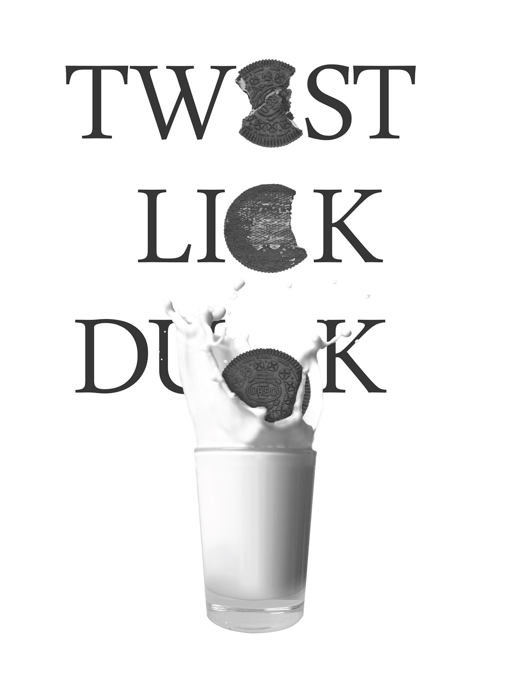
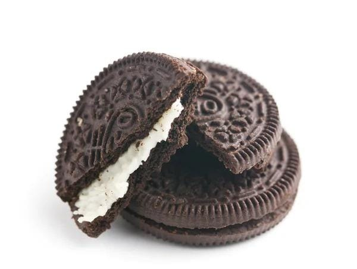
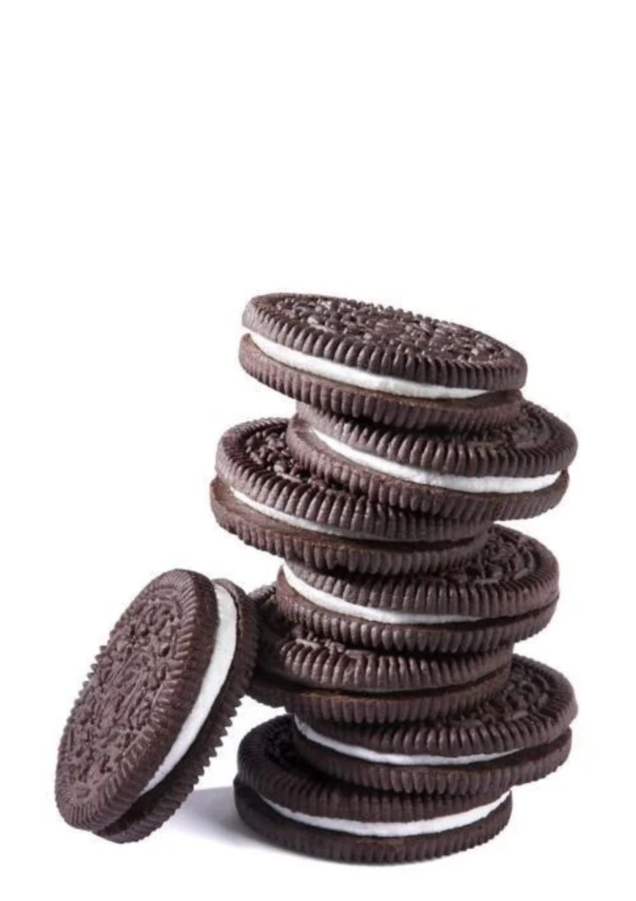
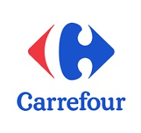

OREOOreo este mai mult decât un simplu biscuit – este o experiență delicioasă care aduce zâmbete și momente de bucurie în întreaga lume. Lansat pentru prima dată în 1912, Oreo a devenit rapid unul dintre cele mai populare produse dulci din lume, fiind savurat în peste 100 de țări.
Cum reușeste Oreo să fie atât de delicios?Oreo este format din două discuri crocante de biscuiți cu aromă de cacao, între care se află o cremă fină și delicioasă de vanilie. Secretul gustului său unic stă în echilibrul perfect dintre textura crocantă și crema fină, care transformă fiecare mușcătură într-un moment de plăcere.

Acest ritual simplu de a răsuci biscuitul,
a linge crema și a-l înmuia în lapte a devenit simbolul
global al modului perfect de a savura un Oreo.

| Magazin | Logo |
|---|---|
| Kaufland | |
| Carrefour |  |
| Penny | |
| Lidl | |
| Profi |